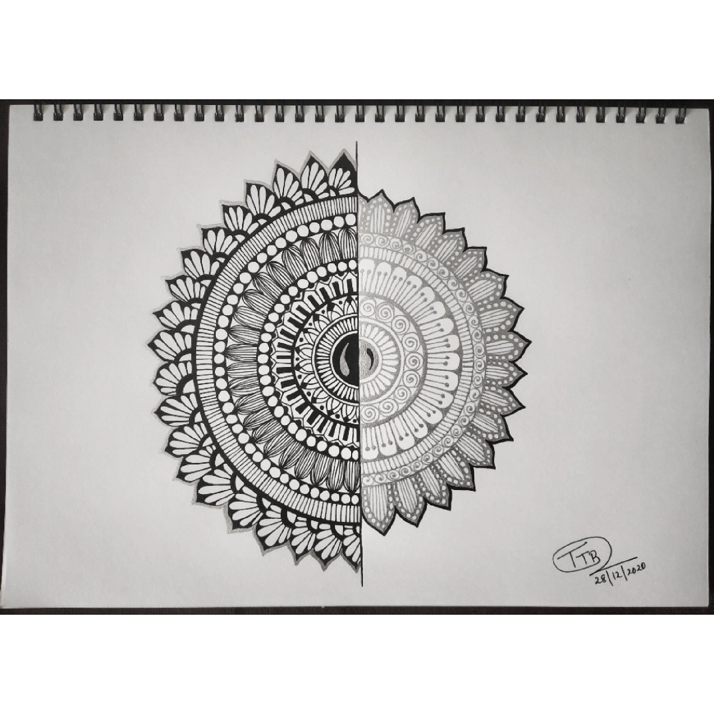

DARK AND BRIGHT
In frame is a a mandala design which basically has a overlapping look.
This art basically gives a message that everyone has a bright side of life and a dark side.
One always would get both these stuff throughout their
life and should be strong enough to face everything in the dark times and
at the same time enjoy each happy moment in the brighter side.
Materials Required :
A-4 size paper.
black gel pen.
silver glitter pen.
scale and pencil.
steps one can follow(if needed) :
First take a plain paper and draw a line in the middle of the page.
Then draw half circle on each side of the line , one side of the line should have bigger
half cicle and the other should be small. Then start making small circles inside that for designing later.
After all this is done start making designs inside the circle. On one side with black gel
pen and other with the silver glitter pen. after the design is make your drawing will be done.